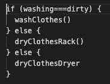
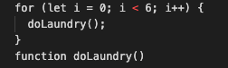

An analogy to describe the differences between HTML and CSS
Let’s pretend we are building a car from scratch (I have never done this so please excuse my lack of car knowledge). It’s not an automatic car with onboard computers from the last couple of decades, it’s like an earlier model of cars that you can build yourself if you have the knowledge. So you build a car that will run but it doesn’t look very interesting or have any extras for comfort (still a massive achievement to me, a person who has built no cars). This is the HTML. Now that you have a basic structure you can paint your car a nice colour, you can add some comfy seat covers, you can put in a radio, you can put some rims on it and don’t forget your fluffy dice. All of this is your CSS. It improves your original car and gives it style but it needs the basic car/HTML in order to do it otherwise you just have the fluffy dice and no car.
Explain control flow and loops using an example process from everyday life
Let’s say there is a chore that you have to do often such as laundry. It requires certain steps done in order and the repeating of the whole thing done a certain amount of times. The term for doing the steps in a certain order in coding is control flow. An example for this is in doing the laundry would be if you have dirty clothes you put in them in the washing machine. And then you also have some clothes that have been washed and need to be hung up on a clothing rack. And then some more of the clothes need to be put in the dryer. How you would say this in a function might be:
Repeating the steps a certain number of times in coding is done using a loop. There are three types of loops but the most common one is the ‘for’ loop so that is the one I am going to concentrate on. To use the laundry example again, here is a loop you might have for doing the laundry for the next six weeks and then stopping (because you will be away from home for a week).
Describe what the DOM is and an example of how you might interact with it
The DOM stands for Document Object Model. A web page is a document that you can look at in a browser or you can look at the HTML (for example using the Inspect function in Chrome), either way it is the same document. The Document Object Model (DOM) is both seeing the webpage and having the ability to manipulate the elements of it. The DOM is often described using a tree model.Reference

Here is an example of interacting with the DOM by changing the background colour of an HTML element.
Explain the difference between accessing data from arrays and objects
An object is one thing with different properties, for instance a horse is an object with different properties of colour, breed, size, etc.
An array is when you have a list of different items with the same variable, for instance a list of horse breeds like Arabian, Clydesdale, Friesian, etc.
You can use the dot and bracket notations to get, add, change or remove a property of an object.
A major difference between objects and arrays is objects use a named index while arrays use a numbered index, specifically a zero based index (the first number is always zero).
In an array you can use the pop, push, shift and unshift methods to add or remove items from the beginning or the end of the array.
Explain what functions are and why they are useful
A function is
- a set of statements that does something or calculates something and most importantly
- the function must take some input and return an output, where there is a relationship between the input and the output.
A function needs to be defined or declared and then you must call it in order to get the result. Calling the function needs to happen within the scope of the function expression for it to work.
The most useful things about functions are
- a function lets you store a piece of code that does something within a block and then call it with only one command and
- you can reuse functions by calling them without typing out the code again and again which saves you time and will make your code look a lot cleaner.